建資料夾 U06交給AI蓋島，把造島包解壓縮進去（START_HERE.md 要在最上層）。
按側欄「新對話」回首頁，再按「專案」旁邊的「新增新的專案」。
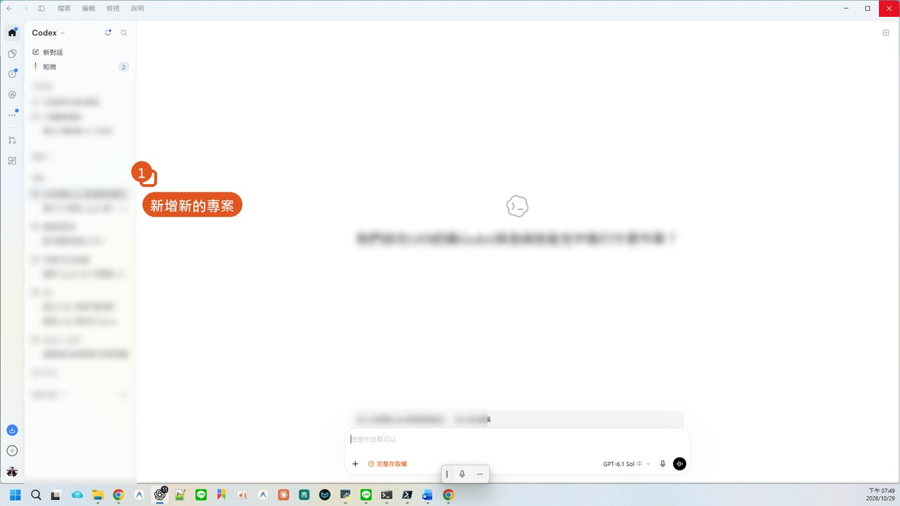
名稱打 U06交給AI蓋島，按「新增」選剛剛的資料夾，再按「建立專案」。
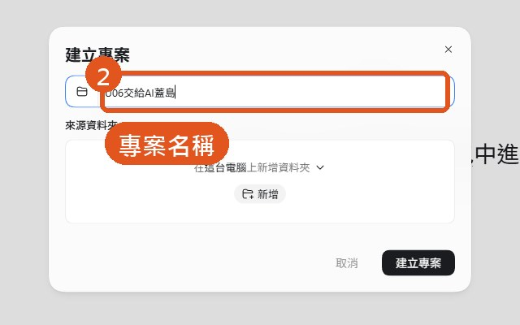
第一次會問要不要信任，選信任。
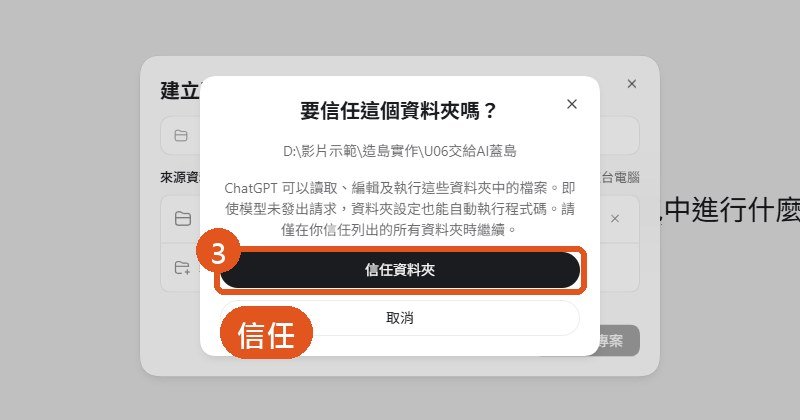
指令在造島工坊最後一步「複製指令」，或資源下載 U06_提示詞.txt。
在專案裡開新對話，整段貼上，按右下角箭頭。
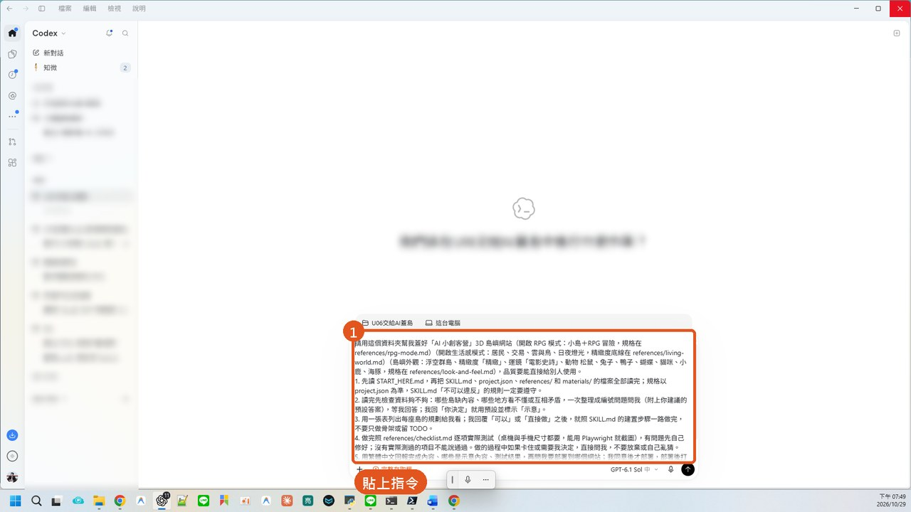
送出後 Codex 開始讀 START_HERE、SKILL、project.json；約半分鐘後提出 4 個問題，每題附建議答案（教材要不要補、學生年齡、作品範圍、證書條件）。
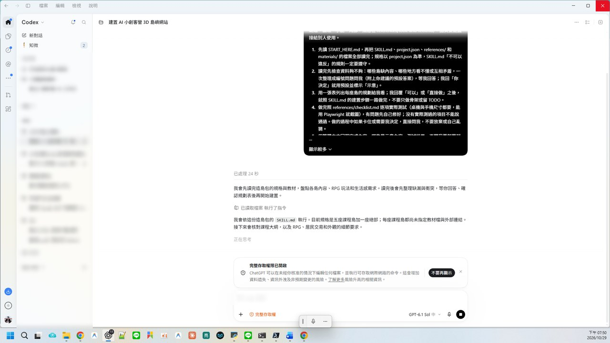
回：「你決定，用你建議的預設答案，示意的地方標示清楚，直接做完。全部測試通過後先停下來回報，不要部署。」它會先列規劃表再開工。
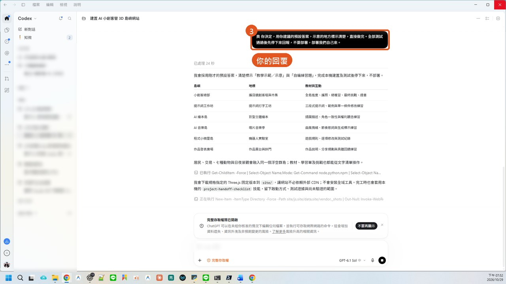
實測約 35 分鐘。
159 個自動化檢查點通過、示意內容已標示、尚未做實體手機驗收；部署時只上傳 site/。
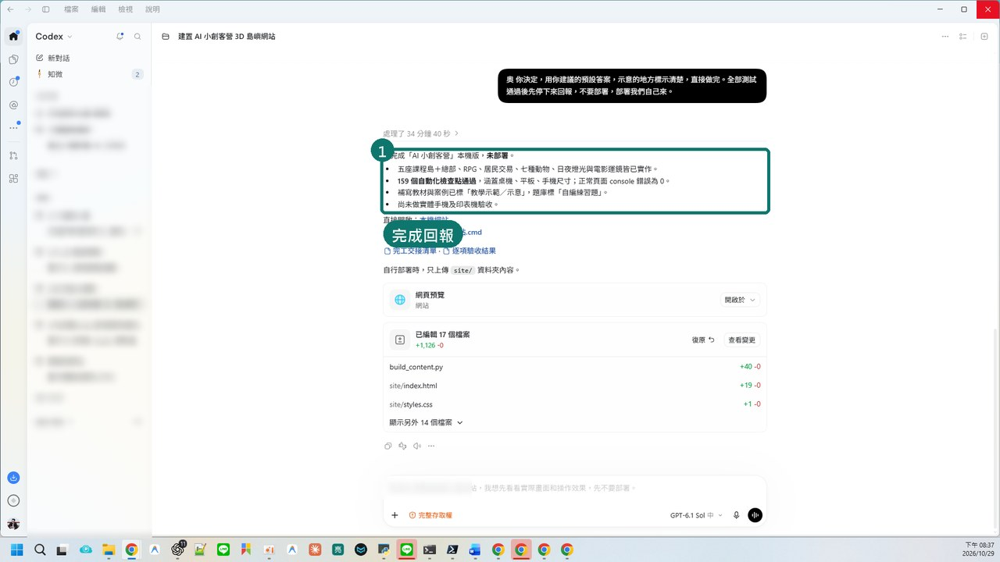
打開 u06-ai-maker-camp-aliang.netlify.app。
輸入代號、選造型按「開始我的冒險」；只想看就按「先逛逛，不玩」。
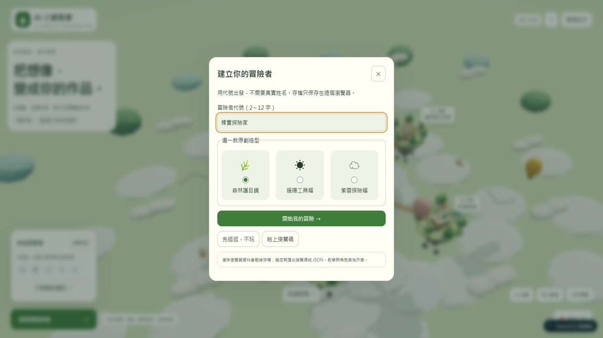
中央小創客總部，吊橋連到五座課程島；拖曳旋轉、滾輪縮放。
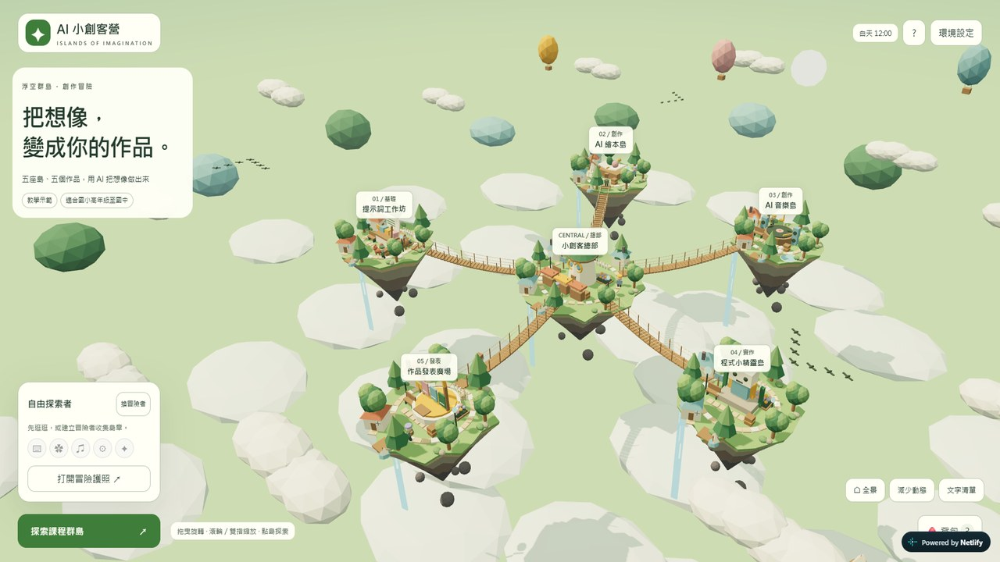
點島名標籤：冒險者走過去，右邊打開教材、學習單、測驗。
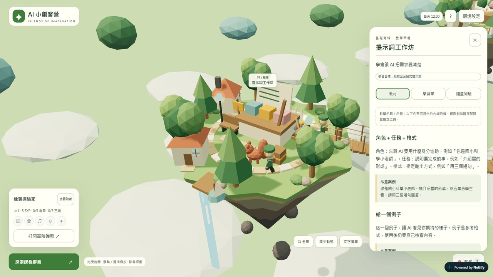
左下「探索課程群島」是文字清單；「打開冒險護照」看島章。
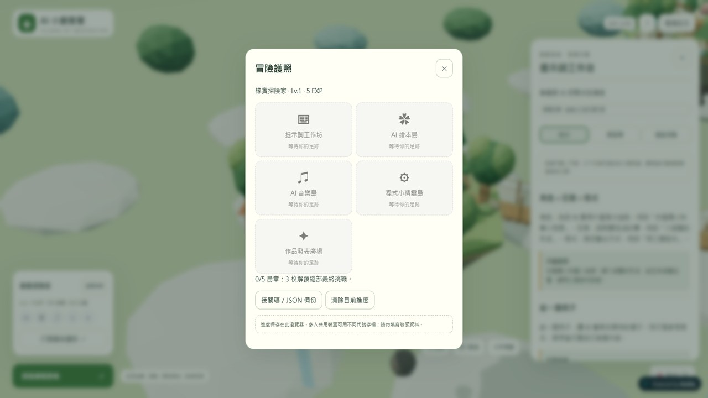
在專案資料夾開終端機：
npx --yes netlify-cli deploy --dir site --prod
沒有 Node.js：打開 app.netlify.com/drop，把 site 資料夾拖進去。
本機：雙擊專案資料夾裡的 啟動網站.cmd。線上：直接開網址。
小改：回 Codex 同一個對話說一句話，改完重新上傳 site/。大改（加島、換內容）：回造島工坊「更新已做好的島」，下載第二版交給 Codex（U07）。